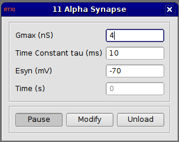

Requirements: None
Limitations: None

This module creates an artificial synapse where the fixed conductance change is described by an alpha function. The fixed conductance waveform is pre-computed according to:
The current is computed according to Ohm's Law:
This conductance is triggered by an event indicated by a value of “1″ on input(1). This can be used to generate a spike-triggered synaptic connection using the Spike Detector module.